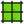
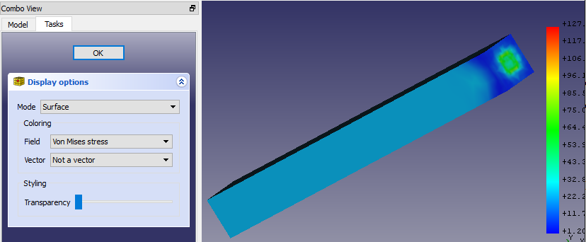

This documentation is not finished. Please help and contribute documentation.
See Draft ShapeString for good documented Command. Gui Command gives an overview over commands. And see List of Commands for other commands.
Go to Help FreeCAD to contribute.
FEM PostPipelineFromResult |
| Menu location |
|---|
| Results → post pipeline from result |
| Workbenches |
| FEM |
| Default shortcut |
| See also |
| FEM tutorial |
{kind=link}
Description
Pipeline is a result object, which creates a new graphical representation of FEM analysis results on the analysed part. It adds color scale and more display options.
How to use
- You need a valid result object in the
 Analysis container, such as CalculiX_static_results.
Analysis container, such as CalculiX_static_results. - Select the result object
- Click  button, or click on menu Results and item Post Pipeline from results. A new object called "Pipeline" will be added to your document; note if will appear outside of the Analysis container.
- Double click the new Pipeline object in the Model tree and select type of properties to display. Typical settings are: Mode: Select Surface, Field: I.e. Von Mises stress 
- Mode: How to draw the results
- Field: Which result property to draw
- Vector: If a property is a vector, you might restrict the data to an axis (X, Y, Z) or select Magnitude to use the vector value.
- If you see no model in the graphical area, go to Edit → Preferences, select Display category and check a checkbox Enagle backlight color
- If you double-click the scale, you can modify display properties.
{kind=link}
{kind=link}
- Gradient: You can select reversed order of the default color gradient or either Black-White or White-Black.
- Parameter range: Minimum and maximum values are filled-in automatically, when you select a property to evaluate on the Pipeline object; you can modify them, however make sure you know what you are doing. You can also amend number of displayed labels and number of decimal places to be displayed.
Limitations
Once again, note, that the Pipeline representation of the results (called VTK) on the displayed part is different from the color gradient results which are visible when you finish solution. Values in the gradient scale cannot be applied to the solution result object.
This tool is available in version 0.17